2．发散级数的非正式应用
我们曾经有机会叙述过18世纪收敛级数与发散级数两者都被应用的研究工作。在19世纪，在柯西摒弃发散级数以前和以后，某些数学家与物理学家仍继续使用它们。一个新的应用是用级数对积分估值。自然，作者们那时并没有意识到，他们是在寻求整个渐近级数展开，还是在寻求积分的渐近级数展开的开头几项。
积分的渐近估值至少可追溯到拉普拉斯。在他的《概率的解析理论》（Théorie analytique des probabilités，1812）中(3)，拉普拉斯用分部积分得到了误差函数的展开式
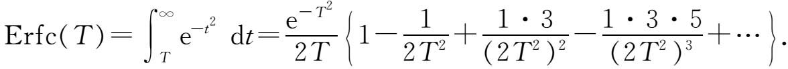
他注明了这个级数是发散的，但他对很大的T用它来计算Erfc（T）。
拉普拉斯在同一书(4)中还指出，积分
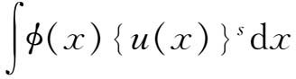
当s很大时依赖于u（x）在其平稳点［使u′（x）＝0的x值］附近的值。拉普拉斯用这个观察结果证明了
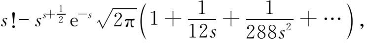
这个结果也可以从log s！的斯特林逼近得到（第20章第4节）。
拉普拉斯在他的《概率的解析理论》(5)中曾有机会研究过形如
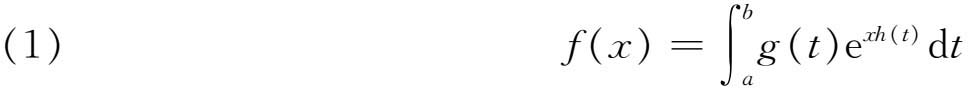
的积分，其中g可以是复的，h和t是实的，而x是大的正数。他明确指出，对积分的主要贡献来自积分区域中使h（t）达到它的绝对极大的那些点的直接邻域。拉普拉斯所说的贡献，就是我们今天所谓的积分的渐近级数估值的第一项。如果h（t）刚好在t＝a取得一个极大值，那么拉普拉斯的结果便是，当x趋向于∞时，
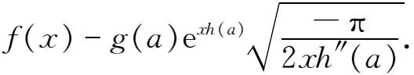
如果要估计的积分不是（1）而是
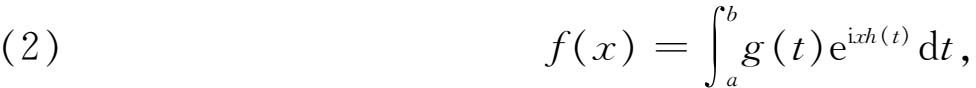
其中t和x是实的并且x很大；这时
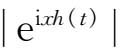
是一个常数，因而拉普拉斯的方法不能用。在这种情形，可以引用柯西在他关于波的传播的主要论文(6)中所提到的方法（现在称为驻波原理）。这个原理说，对积分的最重要的贡献来自h（t）的平稳点［使h′（t）＝0的点］的直接邻域。这个原理直观上看是有道理的，因为被积函数可以想象为以｜g（t）｜为振幅的振荡电流或波。如果t是时间，则波的速度正比于xh′（t）；又如果h′（t）≠0，则当x变为无穷时振荡的速度也无限增加。这时振荡是如此之快，使得在一个整周期里g（t）近似于常数而xh（t）近似于线性函数，因而在一个整周期上积分等于0。这个理由对于使h′（t）＝0的t是不成立的。因此h（t）的平稳点很可能对f（x）的渐近值提供主要的贡献。如果τ是使h′（t）＝0的t的值，又h″（τ）＞0，则当x变为无穷时，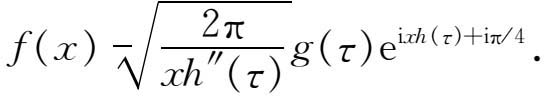
这个原理曾由斯托克斯在1856年的文章(7)中用来对艾里积分（看后面）进行估值，原理曾由开尔文勋爵确切地叙述过(8)。它的第一个令人满意的证明是由沃森（George N．Watson，1886—1965）给出的(9)。
在19世纪最初几十年里，柯西和泊松把许多含有参数的积分化为参数的幂级数。对泊松来说，积分是在地球物理的热传导和弹性振动问题中出现的；而柯西涉及的是水波、光学和天文。例如，柯西在研究光的衍射时(10)把菲涅耳积分表示成发散级数：
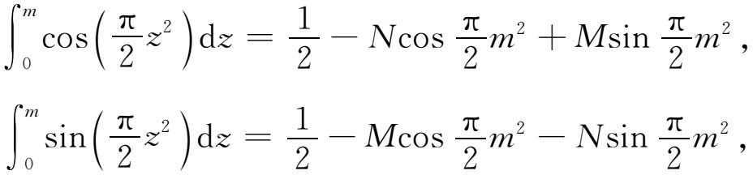
其中
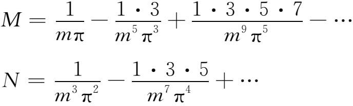
在整个19世纪还创立了其他几种方法（例如最速下降法）来计算积分值。所有这些方法的完满的理论，以及很好地搞清楚逼近究竟是什么，是级数的一些单项还是整个级数，不得不有待于渐近级数理论的建立。
许多用上述方法展开的积分最早是作为微分方程的解出现的。发散级数的另一用法是直接解微分方程。这种用法至少可追溯到欧拉的著作(11)，在关于解非均匀弦振动问题的研究（第22章第3节）中，他给出一个常微分方程（本质上就是r／2阶贝塞尔方程，其中r是整数）的渐近级数解。
雅可比(12)对很大的x给出了Jn（x）的渐近形式：
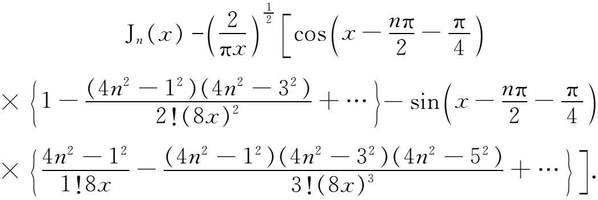
发散级数在解微分方程中的一个稍微不同的用法是刘维尔提出的。他寻找(13)微分方程
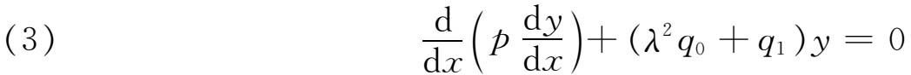
的近似解，其中p，q0和q1是x的正的函数，λ是参数；要求在a≤x≤b上求解。在这里，同边值问题要找λ的离散值相反，他感兴趣的是对大的λ值得到y的某种近似式。为此，他引入变量
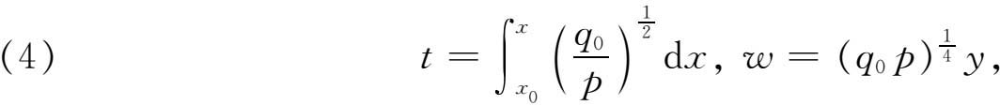
从而得到
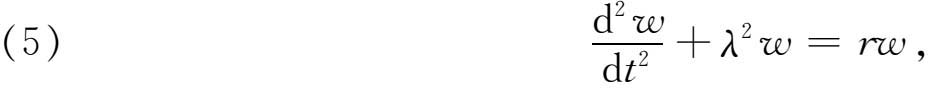
其中
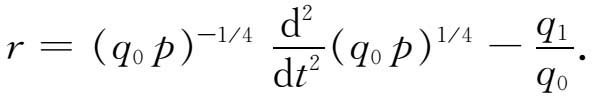
然后他运用一系列步骤，用现代语言来说，相当于用逐次逼近法求解一个沃尔泰拉型积分方程，这就是
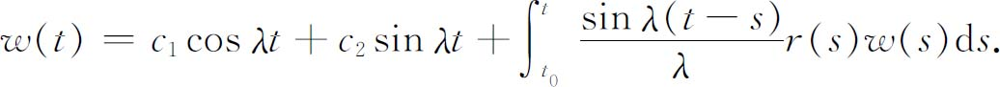
刘维尔接着论证了对充分大的λ值，方程（5）的第一近似应当是
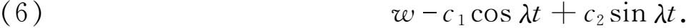
如果现在把由（4）给出的w与t的值用来求（3）的近似解，从（6）就有
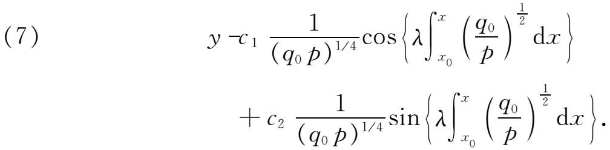
不过刘维尔并没有意识到，他已经对于大的λ得到了（3）的一个渐近级数解的第一项。
格林(14)在研究波在管道中传播时用过同样的方法。这方法被推广到形如
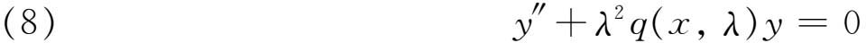
的方程，其中λ是大的正参数，而x可以是实数或复数。它的解现在通常表示为
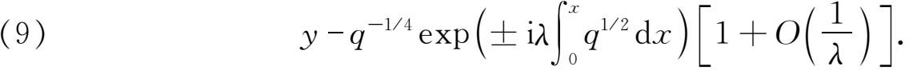
误差项O（1／λ）意味着，精确的解应当包含一项
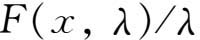
，其中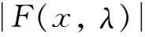
对所考虑区域中的所有x和λ＞λ0是有界的。当限制在复x平面的一个区域内时，这误差项的形式也是对的。刘维尔和格林都没有提供这误差项或者使他们的解成立的条件。更加一般和准确的逼近，是在温策尔（Gregor Wentzel，1898—1978）(15)、克拉默斯（Hendrick A．Kramers，1894—1952）(16)、布里渊（Léon Brillouin，1889—1969）(17)以及杰弗里斯（Harold Jeffreys，1891—1989）(18)等人的文章中弄清楚的，并且成了人们熟知的WKBJ解。这些人都是研究量子论中的薛定谔方程的。斯托克斯在1850年宣读的一篇文章中(19)，考虑了艾里积分
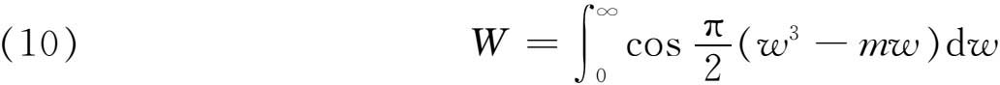
当｜m｜很大时的值。这个积分表示衍射光接近焦散面时的强度。艾里（Sir George Biddell Airy，1801—1892）曾经给出W展为m的幂的一个级数，虽然它对所有的m收敛，但在计算上当｜m｜很大时却不适用。斯托克斯的方法是构造一个微分方程，使这个积分是它的一个特解，而以在计算中可用的发散级数（他称这种级数为半收敛的）来解微分方程。
在说明
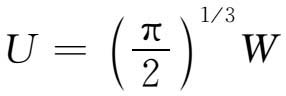
满足艾里微分方程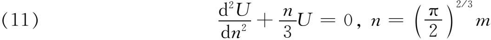
之后，斯托克斯证明，对于正的n有
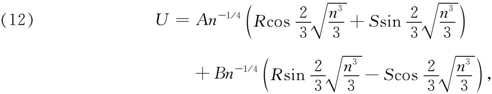
其中
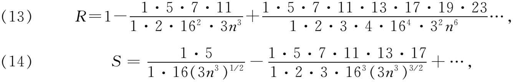
使U成为解的量A和B是用特殊的办法确定的（在这里斯托克斯使用了驻波原理）。对负的n，他也给出了类似的结果。
级数（12）和负的n的级数，取其若干项，其性态很像收敛级数，但实在都是发散的。斯托克斯注意到，它们可以用于计算。给定n的一个值，可以用从第一项起直到对所给n值为最小的那一项止。他给出一种定性的论证，说明为什么级数对于数值工作是可用的。
在对正的和负的n求解（11）时，斯托克斯遇到了特殊的困难。他不可能通过使n越过0而从正的n的级数过渡到负的n的级数，因为这级数对n＝0没有意义。他因此尝试通过n的复值从正的n过渡到负的n，但这并不产生正确的级数和常数因子。
经过一番努力以后(20)，斯托克斯终于发现，如果在n的某一辐角范围内，一个通解用两个作为特解的渐近级数的某一线性组合表示，那么在n的辐角范围的一个邻域内，这两个基本渐近展开式的同一个线性组合，决非必然表示同一个通解。他发现，当跨越由n的辐角＝常数给出的某些直线时，这线性组合的常数突然改变了。这些直线现在称为斯托克斯线。
虽然斯托克斯本来主要关心的是积分值的计算，但是他很清楚，发散级数可以一般地用来解微分方程。欧拉、泊松和其他人，也曾用这种办法解出个别的微分方程，但他们的结果看来是给出特殊物理问题的解的一些诀窍。在1856年和1857年的文章中，斯托克斯实际上给出了几个例子。
上面关于用发散级数计算积分与解微分方程的工作，是许多数学家和物理学家所完成的工作的一个样品。